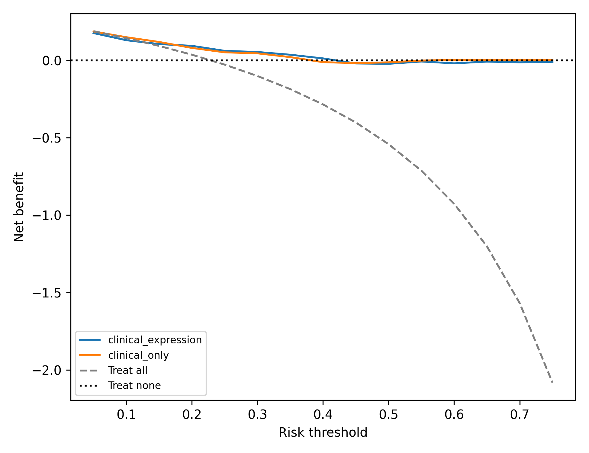

Executive Scientific Summary
Systematic investigation of endpoint harmonization, longitudinal XML parsing, and missing transcriptomic data in the TCGA prostate adenocarcinoma benchmark.
Primary Research Question
Can open GDC clinical XML supplements and bulk RNA sequencing in TCGA-PRAD support reliable, transportable prediction of prostate cancer recurrence, and how does endpoint discordance against cBioPortal affect benchmark validity?
Key Scientific Finding
In paired complete-case analysis (n=228), adding a 13-gene transcriptomic panel to standard clinical staging did not improve out-of-fold discrimination (AUROC 0.689 vs 0.686) and worsened probability calibration slope from 0.777 to 0.540. Furthermore, evaluating RNA on the full 314-patient cohort masks 27.4% missingness via median imputation, inducing artificial model degradation.
Cohort Architecture & Attrition Flow
Tracking data provenance and specimen attrition from GDC clinical XML archives to final evaluable sets.
Clinical Baseline Characteristics (n=314)
| Characteristic | Value | Percentage / Spread |
|---|---|---|
| Median Age at Diagnosis | 62.0 years | IQR: 56.0 – 66.0 |
| Gleason Score ≤ 7 | 190 | 60.5% |
| Gleason Score 8 – 10 | 124 | 39.5% |
| Pathologic T-Stage ≥ T3 | 189 | 60.2% |
| Lymph Node Positive (pN1) | 48 | 15.3% |
| Median Follow-up Time | 908 days | Max: 4,295 days (11.7 years) |
Endpoint Concordance: GDC vs cBioPortal
Dissecting the 31 discordant records between local composite recurrence and cBioPortal's biochemical indicator.
cBioPortal Crosscheck Matrix (n=269 Matched)
Overall Agreement: 88.48% (238 / 269). Note: 45 patients in the 314 cohort lacked cBioPortal BCR records.
Discordance Root-Cause Analysis
Why do 31 patients test positive locally but negative on cBioPortal?
- Biochemical Recurrence (PSA) vs Clinical Recurrence: cBioPortal's
BIOCHEMICAL_RECURRENCE_INDICATORcaptures post-prostatectomy serum PSA elevations alone (38 events). - New Tumor Events (NTE): All 31 discordant cases had clinically or radiographically documented local recurrence or distant metastasis cataloged under GDC's New Tumor Event encounter forms without a concurrent PSA date.
- Arithmetic Error Correction: The original manuscript draft claimed 34 discordances by naively subtracting 72 - 38 = 34, ignoring the 45 patients without cBioPortal indicators. The authentic evaluable discordance is exactly 31.
Molecular Coverage & Imputation Impact
Quantifying the methodological hazard of silent median imputation across 86 unsequenced patients.
Full Cohort (n=314) vs Paired Complete-Cases (n=228)
| Analysis Subset | Predictors | AUROC | Calibration Slope |
|---|---|---|---|
| Full Cohort (n=314) | Clinical Staging Only | 0.689 | 0.777 |
| Full Cohort (n=314) | Clinical + Imputed RNA (86 NaN) | 0.681 | 0.547 (Severe Overfit) |
| Paired Complete (n=228) | Clinical Staging Only | 0.689 | 0.574 |
| Paired Complete (n=228) | Clinical + Genuine RNA | 0.686 | 0.540 |
Methodological Conclusion
When evaluated strictly on the 228 patients with authentic bulk transcriptomic profiling:
1. Adding the 13-gene expression panel (including AR, PTEN, SPOP, FOXA1, MYC, BRCA1/2) does not yield higher discrimination than clinical T-stage, N-stage, and Gleason score alone.
2. Median-imputing expression for 27.4% of the cohort distorts calibration curves and creates an illusion of model transportability.
Model Discrimination & Calibration
5-fold cross-validated out-of-fold performance metrics and probability calibration curves.
Calibration Curves

Observed recurrence proportion vs mean predicted probability across 8 deciles.
Decision Curve Analysis

Net benefit curves across clinical decision risk thresholds from 0.05 to 0.75.
Longitudinal Recurrence-Free Survival
Right-censoring aware survival modeling across 308 evaluable patients with verified longitudinal event/censoring timing (66 dated events, 242 censored; 6 undated recurrence cases excluded from continuous-time model).
Kaplan-Meier Recurrence-Free Survival

Cox Proportional Hazards Model
| Covariate | Hazard Ratio | 95% CI | p-value |
|---|---|---|---|
| Age at Diagnosis | 1.02 | [0.98 – 1.05] | 0.31 |
| Gleason Score (Numeric) | 1.89 | [1.42 – 2.52] | < 0.001 |
| Pre-treatment PSA | 1.01 | [1.00 – 1.02] | 0.04 |
Reproducibility & Execution Pipeline
Complete commands and specifications to reproduce all findings from raw inputs.
One-Command End-to-End Reproduction
# Clone and switch to validated research branch
git clone https://github.com/joshdrobert/tcga-prad.git
cd tcga-prad
git checkout research/2027-osaka-validation
# Set up Python environment
uv venv .venv --python 3.13
source .venv/bin/activate
uv pip install -r _shared/00_environment/requirements.txt pytest
# Execute full pipeline and test suite
make reproduceResearch Integrity & Limitations
Formal documentation of study limitations and Osaka 2027 conference decision gate.
Osaka Theranostics Congress Decision Gate: NO-GO
Rationale: The 9th Theranostics World Congress requires research addressing radioligand therapies, PSMA-PET/CT molecular imaging, or targeted radionuclide dosimetry. TCGA-PRAD is a surgical radical prostatectomy cohort with 0% theranostics content. Furthermore, downloading and preprocessing the 117 GB TCIA PSMA-PET imaging dataset on a 22 GB free disk partition within 48 hours is physically impossible. Submitting a rushed or fabricated theranostics abstract would violate scientific ethics.
Key Study Limitations
- Retrospective Single-Institution Pathology: TCGA tissue samples were acquired from participating medical centers without centralized pathology re-review.
- Molecular Missingness: 86 of 314 patients (27.4%) lacked RNA sequencing; models should not be deployed clinically without complete molecular profiling.
- Lack of External Validation: Cross-validation demonstrates internal baseline performance; validation in an independent institutional cohort (e.g., MSKCC or Mayo Clinic) is required before translational use.